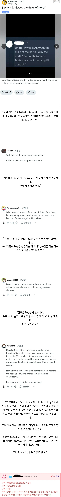

한국 로판은 왜 맨날 북부대공이 나와????
댓글
존 스노우 때문에 생긴거 아니었음? 윈터이스커밍
이성계와의 로맨스;;
22사단 사단장같은 느낌 ㅋㅋㅋ
왕좌의 게임이 근원에 있는거 같긴해
북부대공이 검은 옷 입는거는 왕좌의게임 때문 아닌가?
북 현무가 검은색을 상징해서 그런가?
사실 한국 로판의 북부대공 이미지는 대공보다는 변경백에 더 가깝다고 봐야할거같음..
하필 북부대공으로 바뀐 이유는 정말 북한때문인건딘 모르겠지만
변경백이 따로쓰이는 클리셰였는데
북부대공이 그 이미지까지 흡수해버린게 맞는듯
왕족인데 힘을 주긴 싫고 대우는 해줘야하니 땅은 넓지만 험하고 멀어서 사실상 유배에 가까운 배치를 해서
정치적으로 아무 힘이 없고 무시당하는 인물이지만 왕족 출신인 대공의 지위를 가지고 있고
알고보니 북부의 땅에도 자기들만의 무언가 있어서 중앙귀족들의 가치관에 맞지 않았던거 뿐이지 유복하게 살 수 있는 환경인거임
중앙귀족의 정치판에서 따돌려지고 무시받던 주인공이 더러운 중앙귀족의 정치판을 떠나서 행복해졌다고 할 수 있는 환경인거지
이 클리셰에 변경백 클리셰까지 섞어서 사실 북부땅 자체가 존나 노른자땅이고 절대적인 가치로 따져도 가진게 많고 병력도 많고 권력도 많은 사실상 본인 의지로 쿠데타하지 않는거지 왕이 될 수도 있는 남자가 되는거
유노낫띵존스노우
얼불노 베끼다 만들어진 클리셰인데 어렵게들 생각하네
러시아나 동유럽, 동로마 기반의 작품이면 동부대공 하는게 가장 위험해 보임
대충 싸이버거가 달려오는 짤
여자로 따지면 올리비에 밀라 암스트롱같은건가
애초에 왕좌의게임도 북쪽이 위험지역이잖아
북쪽 야만인 막는 성채잖아
걍 시발 한국판 존스노우가 필요한거라고 ㅋㅋㅋㅋㅋㅋㅋㅋㅋㅋㅋㅋㅋㅋ
북부대공(파주연천) 변경백(강릉)
북부대공 남해제독 서역거상 동방현자
대충 이런느낌으로 네 명 찍고 들어가지 않나 ㅋㅋㅋ
북을 막아야 한다
북북대공은 북북할배 아니냐?
한민족국가들은 만주벌판 상실한 이후부터 북부의 오랑캐 막는데 진심이었기 때문